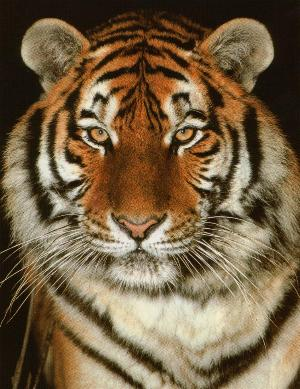

- HOME
- Algemeen
- Onderverdeling
- Uiterlijk
- Gedrag
- Zintuigen
- Ondersoorten:
- Siberische tijger
- Bengaalse tijger
- Sumatraanse tijger
- Indo-Chinese tijger
- Zuid-Chinese tijger
- Kaspische tijger
- Javaanse tijger
- Balinese tijger
- Hybriden:
- Lijger
- Teeuw
- Historisch:
- Sabeltandtijger
- Links


Relevante links:
- English
De Engelse versie van Tijgeritorium.
Welkom op Tijgeritorium
Vragen of opmerkingen? WEBMASTER

NOTA VAN DE WEBMASTER:
Dit is een site over tijgers.
Ik heb mijn best gedaan zoveel mogelijk en zo volledig mogelijk te schrijven over deze prachtige dieren.
Ik zou u graag erop willen wijzen dat er weliswaar een onderverdeling binnen deze soort wordt gemaakt, maar deze vooral gebaseerd is op de plaats waar zij voorkomen.
U kunt informatie over de gelijke kenmerken vinden in de categorie 'Algemeen' links in de navigatiebalk en voor de onderverdelingen zelf op hen desbetreffende pagina.